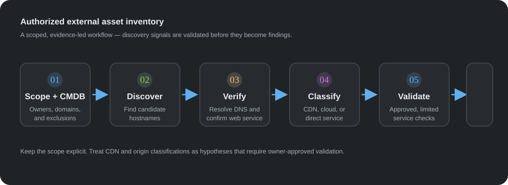
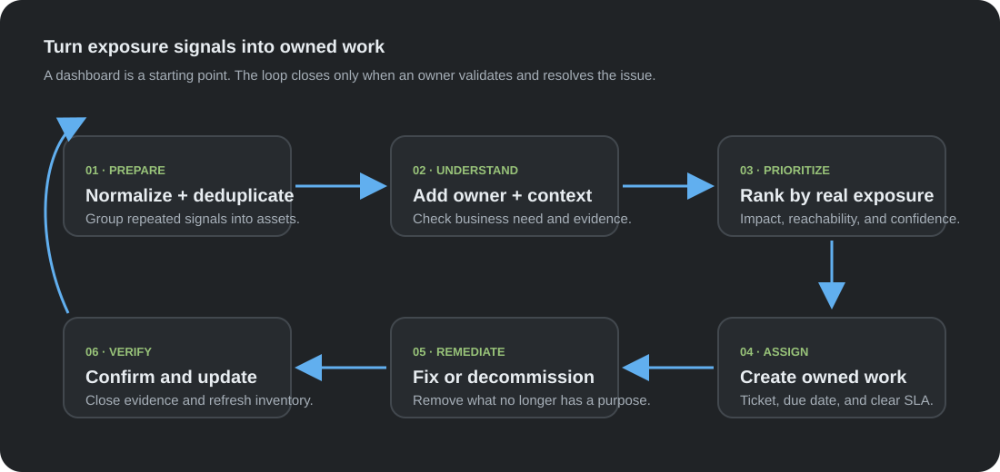

From Asset Inventory to Action: A Practical ASM Pipeline
🇻🇳 Bản tiếng Việt nằm ở phía dưới bài viết (Vietnamese version is available below).
From Asset Inventory to Action: A Practical ASM Pipeline
An organization may have a list of its main domains in a CMDB and still be unsure what it exposes to the Internet. Subdomains are created, services move between providers, test systems outlive their projects, and DNS records are not always retired when an application disappears. The inventory is a useful starting point, but it is not always a complete picture.
Attack surface management (ASM) is the ongoing work of finding, validating, and tracking an organization's reachable assets from an external perspective. The goal is broader than finding vulnerabilities: teams need to know what exists, who owns it, why it is public, and what should happen when that exposure is no longer needed.

Figure 1. A scoped discovery workflow. Findings are validated before they are treated as confirmed assets. / Hình 1. Luồng khám phá có phạm vi rõ ràng. Phát hiện cần được xác minh trước khi xem là tài sản đã xác nhận.
Why a dashboard alone does not reduce risk
ASM tooling can surface forgotten administration pages, old development hosts, stale DNS entries, cloud resources, and services that are unexpectedly reachable. These exposures are often ordinary operational leftovers rather than sophisticated vulnerabilities. Their significance depends on context: an internet-facing service may be intentional, while an abandoned hostname pointing to an old system may have no current owner at all.
Buying or building a tool is only one part of the work. A scan can produce a long report, but that report has little value if nobody is responsible for reviewing it, validating the evidence, and coordinating a fix. Large environments also produce duplicate and low-confidence signals. Without ownership, prioritization, and a remediation path, the team eventually stops opening the dashboard.
ASM works best as a recurring operational process connected to asset ownership, vulnerability management, infrastructure teams, and the organization's existing ticket workflow. It should help people make decisions, not create another isolated data store.
A small pipeline can make the inventory more useful
WebSurface is an example of a lightweight pipeline that brings established tools together for an authorized inventory exercise. It is designed to organize evidence and help an analyst triage exposure, rather than to make automatic security decisions.
The workflow starts with an approved list of organization-owned domains and explicit exclusions. Passive subdomain discovery can add candidate hostnames that are missing from the initial inventory. DNS resolution then records which names currently map to addresses. A web-probing step gathers basic observations such as whether a service responds, its status code, page title, address, certificate, and DNS relationships.
The next step is classification. Some addresses belong to a CDN, web application firewall, cloud platform, or other shared provider. DNS, certificate, response, and provider-range signals can help categorize the result, but they are heuristics: they do not prove that a host is an origin server. Any deeper validation must stay within the approved scope and be coordinated with the asset owner. A suspected CDN origin should never be treated as permission to bypass that CDN or probe infrastructure that is not explicitly in scope.
Only validated, in-scope assets should move to service review. A port-discovery tool can check an agreed set of ports at a conservative rate; Nmap can then identify services on approved candidates when the engagement allows it. A browser screenshot tool such as Gowitness can make web interfaces easier to triage, but screenshots, response data, and databases may contain sensitive information. Store them securely and limit access to the people who need them.
Each run should create a separate, traceable output set: source inputs, normalized results, validation notes, a concise summary, and any supporting database. Keeping the raw evidence alongside the reviewed inventory makes it easier to reproduce a result and understand why an asset was included or excluded.
Keep scope and confidence visible
An external asset pipeline should make its boundaries clear. Start with domains and address ranges the organization owns or is authorized to assess. Record exclusions, third-party services, test windows, and request limits before active checks begin. Use passive methods where possible, and keep active probing proportionate to the task.
Separate observations from conclusions. “This hostname resolves to this address” is an observation; “this address is an exposed origin” is a hypothesis that needs validation. Provider ranges and CDN fingerprints can change, and headers or certificates can be shared across many customers. Give each finding a confidence level and preserve the evidence behind it so a human reviewer can make the final call.
The purpose of origin classification is to help an organization understand its own architecture and correct unintended exposure. It is not a way to reach around a third-party security layer. If ownership or authorization is unclear, leave the asset unprobed and ask the responsible team to confirm scope.
Turn findings into work that gets finished
After discovery, normalize hostnames and addresses, merge duplicates, add business context, and assign an owner. Prioritize using factors such as reachability, service type, data sensitivity, confidence, and whether the exposure is required. A low-confidence signal may need a quick validation; a confirmed obsolete service may be safer to remove than to patch and keep online.
The response loop should create a trackable ticket, a responsible team, a due date, and a clear closure condition. Once an asset is fixed, removed, or approved as necessary, update the inventory and verify the change. This closes the loop between what the Internet can see and what the organization believes it owns.

Figure 2. The operational loop that turns a finding into a verified change. / Hình 2. Vòng vận hành biến phát hiện thành thay đổi đã được xác minh.
What a pilot can teach the organization
A pilot based on a large, approved inventory can quickly show the difference between the CMDB view and the externally observable view. Discovery may expand the list of known hosts substantially; validation and classification then reduce that raw set to a smaller group that deserves human review. A focused run can produce useful evidence in hours, but the most valuable result is usually not the headline number.
In this case study, exact counts and asset-level findings are intentionally omitted because they came from an organization-specific environment. The general lesson is that an external inventory can reveal unowned test systems, outdated services, administrative interfaces, or direct exposure that was not reflected in internal records. Those categories are enough to explain why ownership and follow-up matter without publishing details that could identify or expose a particular organization.
The evidence also gives teams a practical basis for cleaning up DNS, decommissioning unused services, tightening publishing rules, and assigning responsibility for domains and subdomains. This turns a vague statement such as “our attack surface is too large” into a queue of concrete, reviewable work.
Limitations and lessons learned
ASM is not a one-time deployment. Assets change continuously, and every discovery method has blind spots. Passive data can be stale; active checks can miss systems that are temporarily unavailable; provider classification can be wrong; and screenshots cannot explain the business context of a page. Results need human validation and recurring ownership.
The hard part is rarely collecting more data. It is deciding which observations are real, understanding whether they matter, finding the right owner, and confirming that the corrective action worked. A good pipeline makes those decisions easier to perform and easier to audit.
The most revealing result is sometimes not that a resource is exposed, but that nobody knows it exists. ASM becomes valuable when that discovery leads to a clear decision: retain and protect the asset, assign an owner, or remove it.
🇻🇳 Từ kiểm kê tài sản đến hành động: Pipeline ASM thực tế
Một tổ chức có thể lưu các domain chính trong CMDB nhưng vẫn chưa biết chính xác những gì đang được công khai trên Internet. Subdomain mới được tạo, dịch vụ chuyển nhà cung cấp, môi trường thử nghiệm tồn tại lâu hơn dự án, còn bản ghi DNS đôi khi không được gỡ sau khi ứng dụng ngừng hoạt động. Danh sách kiểm kê là điểm bắt đầu hữu ích, nhưng chưa chắc phản ánh đầy đủ thực tế.
Quản lý bề mặt tấn công (ASM) là quá trình liên tục tìm kiếm, xác minh và theo dõi các tài sản có thể truy cập của tổ chức từ góc nhìn bên ngoài. Mục tiêu không chỉ là tìm lỗ hổng: đội ngũ cần biết tài sản nào tồn tại, ai chịu trách nhiệm, vì sao nó được công khai và cần làm gì khi không còn nhu cầu truy cập từ Internet.
Hình 1. Luồng khám phá có phạm vi rõ ràng. Phát hiện cần được xác minh trước khi xem là tài sản đã xác nhận. / Figure 1. A scoped discovery workflow. Findings are validated before they are treated as confirmed assets.
Vì sao chỉ có dashboard chưa thể giảm rủi ro
Công cụ ASM có thể phát hiện trang quản trị bị quên, máy chủ phát triển cũ, bản ghi DNS lỗi thời, tài nguyên cloud hoặc dịch vụ bất ngờ có thể truy cập công khai. Đây thường là dấu vết vận hành thông thường hơn là lỗ hổng tinh vi. Mức độ đáng lo phụ thuộc vào ngữ cảnh: một dịch vụ hướng Internet có thể là chủ đích, trong khi hostname cũ trỏ đến hệ thống bỏ quên có thể không còn ai quản lý.
Mua hoặc xây dựng công cụ mới chỉ là một phần công việc. Một lần quét có thể tạo báo cáo dài, nhưng báo cáo đó ít giá trị nếu không ai chịu trách nhiệm xem xét, xác minh bằng chứng và phối hợp khắc phục. Môi trường lớn cũng thường có nhiều tín hiệu trùng lặp hoặc độ tin cậy thấp. Không có người phụ trách, ưu tiên và quy trình xử lý, đội ngũ sẽ dần ngừng mở dashboard.
ASM hiệu quả nhất khi trở thành quy trình vận hành định kỳ, liên kết với chủ sở hữu tài sản, quản lý lỗ hổng, các đội hạ tầng và hệ thống ticket sẵn có. Công cụ nên giúp mọi người ra quyết định, không tạo thêm một kho dữ liệu tách biệt.
Pipeline nhỏ giúp inventory hữu ích hơn
WebSurface là ví dụ về pipeline gọn nhẹ kết hợp các công cụ đã phổ biến để phục vụ bài kiểm kê được cho phép. Mục đích là sắp xếp bằng chứng và hỗ trợ chuyên viên phân loại mức độ phơi nhiễm, không tự động đưa ra quyết định bảo mật.
Luồng bắt đầu bằng danh sách domain thuộc tổ chức đã được duyệt cùng các ngoại lệ rõ ràng. Khám phá subdomain thụ động có thể bổ sung các hostname còn thiếu trong inventory ban đầu. Bước phân giải DNS ghi nhận tên nào hiện ánh xạ đến địa chỉ nào. Sau đó, bước kiểm tra web thu thập quan sát cơ bản như dịch vụ có phản hồi không, status code, tiêu đề trang, địa chỉ, chứng chỉ và quan hệ DNS.
Bước tiếp theo là phân loại. Một số địa chỉ thuộc CDN, tường lửa ứng dụng web, nền tảng cloud hoặc nhà cung cấp dùng chung. Tín hiệu DNS, chứng chỉ, phản hồi và dải địa chỉ nhà cung cấp có thể giúp phân loại, nhưng chúng chỉ là heuristic, không chứng minh máy chủ đó là origin. Mọi bước xác minh sâu hơn phải nằm trong phạm vi đã duyệt và được phối hợp với chủ sở hữu tài sản. Nghi ngờ có origin sau CDN không đồng nghĩa với việc được phép vượt qua CDN hoặc kiểm tra hạ tầng ngoài phạm vi.
Chỉ đưa tài sản đã xác minh và nằm trong phạm vi sang bước xem xét dịch vụ. Công cụ dò cổng có thể kiểm tra danh sách cổng đã thống nhất với tốc độ thận trọng; Nmap có thể nhận diện dịch vụ trên các mục tiêu đã duyệt nếu thỏa thuận kiểm thử cho phép. Công cụ chụp ảnh trình duyệt như Gowitness giúp phân loại giao diện nhanh hơn, nhưng ảnh chụp, dữ liệu phản hồi và database có thể chứa thông tin nhạy cảm. Hãy lưu trữ an toàn và giới hạn người được truy cập.
Mỗi lần chạy nên tạo một bộ kết quả riêng, có thể truy vết: đầu vào, dữ liệu đã chuẩn hóa, ghi chú xác minh, báo cáo tóm tắt và database hỗ trợ nếu có. Giữ bằng chứng gốc bên cạnh inventory đã rà soát giúp tái hiện kết quả và hiểu vì sao một tài sản được thêm vào hoặc loại ra.
Luôn thể hiện phạm vi và độ tin cậy
Pipeline tài sản bên ngoài cần làm rõ ranh giới kiểm tra. Bắt đầu bằng domain và dải địa chỉ mà tổ chức sở hữu hoặc được phép đánh giá. Ghi lại ngoại lệ, dịch vụ bên thứ ba, khung giờ và giới hạn request trước khi bắt đầu các bước chủ động. Ưu tiên phương pháp thụ động khi phù hợp và giữ mức độ dò quét tương xứng với nhiệm vụ.
Phân biệt quan sát với kết luận. “Hostname này phân giải đến địa chỉ này” là một quan sát; “địa chỉ này là origin bị lộ” là giả thuyết cần xác minh. Dải địa chỉ nhà cung cấp và dấu hiệu CDN có thể thay đổi, còn header hoặc chứng chỉ có thể được nhiều khách hàng dùng chung. Gán mức độ tin cậy cho từng phát hiện và lưu bằng chứng để con người đưa ra kết luận cuối cùng.
Mục tiêu của việc phân loại origin là giúp tổ chức hiểu kiến trúc của chính mình và khắc phục phơi nhiễm ngoài ý muốn. Đây không phải cách để đi vòng qua lớp bảo vệ của bên thứ ba. Nếu chưa rõ quyền sở hữu hoặc quyền kiểm thử, hãy để tài sản đó ở trạng thái chưa dò và yêu cầu đội phụ trách xác nhận phạm vi.
Biến phát hiện thành công việc được hoàn tất
Sau khi khám phá, hãy chuẩn hóa hostname và địa chỉ, gộp bản ghi trùng lặp, thêm ngữ cảnh nghiệp vụ và xác định người phụ trách. Ưu tiên dựa trên các yếu tố như khả năng truy cập, loại dịch vụ, độ nhạy dữ liệu, độ tin cậy và nhu cầu kinh doanh. Tín hiệu độ tin cậy thấp có thể chỉ cần xác minh nhanh; một dịch vụ cũ đã xác nhận không còn sử dụng có thể nên được gỡ bỏ thay vì vá rồi tiếp tục duy trì.
Quy trình xử lý nên tạo ticket có thể theo dõi, đội phụ trách, ngày đến hạn và điều kiện đóng rõ ràng. Sau khi tài sản được sửa, gỡ hoặc phê duyệt tiếp tục sử dụng, hãy cập nhật inventory và xác minh thay đổi. Như vậy vòng lặp giữa những gì Internet nhìn thấy và những gì tổ chức nghĩ mình đang sở hữu mới được khép kín.
Hình 2. Vòng vận hành biến phát hiện thành thay đổi đã được xác minh. / Figure 2. The operational loop that turns a finding into a verified change.
Một đợt thử nghiệm có thể cho tổ chức thấy điều gì
Một đợt thử nghiệm trên inventory lớn đã được phê duyệt có thể nhanh chóng cho thấy sự khác biệt giữa góc nhìn CMDB và góc nhìn bên ngoài. Khám phá có thể mở rộng danh sách host đã biết lên đáng kể; bước xác minh và phân loại sau đó thu hẹp kết quả thô thành một nhóm nhỏ hơn cần con người xem xét. Một lần chạy có mục tiêu rõ ràng có thể tạo bằng chứng hữu ích trong vài giờ, nhưng kết quả giá trị nhất thường không phải con số nổi bật.
Trong case study này, số liệu chính xác và phát hiện ở cấp tài sản được lược bỏ có chủ đích vì chúng xuất phát từ môi trường riêng của một tổ chức. Bài học chung là inventory bên ngoài có thể phát hiện hệ thống thử nghiệm không có chủ, dịch vụ lỗi thời, giao diện quản trị hoặc mức phơi nhiễm trực tiếp chưa được phản ánh trong hồ sơ nội bộ. Những nhóm phát hiện này đủ để giải thích vì sao quyền sở hữu và bước xử lý tiếp theo quan trọng, mà không công khai chi tiết có thể nhận diện hoặc làm lộ một tổ chức cụ thể.
Bằng chứng cũng giúp các đội có cơ sở thực tế để dọn DNS, ngừng dịch vụ không còn dùng, siết quy tắc công khai tài nguyên và phân công người quản lý domain/subdomain. Thay vì nhận định chung chung “bề mặt tấn công quá lớn”, mọi người có thể bắt đầu xử lý một danh sách công việc cụ thể, có thể rà soát.
Giới hạn và bài học
ASM không phải dự án cài đặt một lần. Tài sản thay đổi liên tục và mọi phương pháp khám phá đều có điểm mù. Dữ liệu thụ động có thể cũ; kiểm tra chủ động có thể bỏ sót hệ thống tạm ngừng; phân loại nhà cung cấp có thể sai; ảnh chụp không thể giải thích ngữ cảnh kinh doanh của một trang. Kết quả cần được con người xác minh và có người theo dõi định kỳ.
Phần khó thường không phải thu thập thêm dữ liệu. Đó là quyết định quan sát nào là thật, hiểu mức độ quan trọng, tìm đúng người phụ trách và xác nhận biện pháp khắc phục đã có hiệu quả. Một pipeline tốt giúp những quyết định đó dễ thực hiện và dễ kiểm toán hơn.
Đôi khi phát hiện đáng chú ý nhất không phải là một tài nguyên đang bị phơi nhiễm, mà là không ai biết nó tồn tại. ASM chỉ thực sự có giá trị khi phát hiện dẫn đến quyết định rõ ràng: tiếp tục sử dụng và bảo vệ tài sản, giao người quản lý, hoặc gỡ bỏ nó.